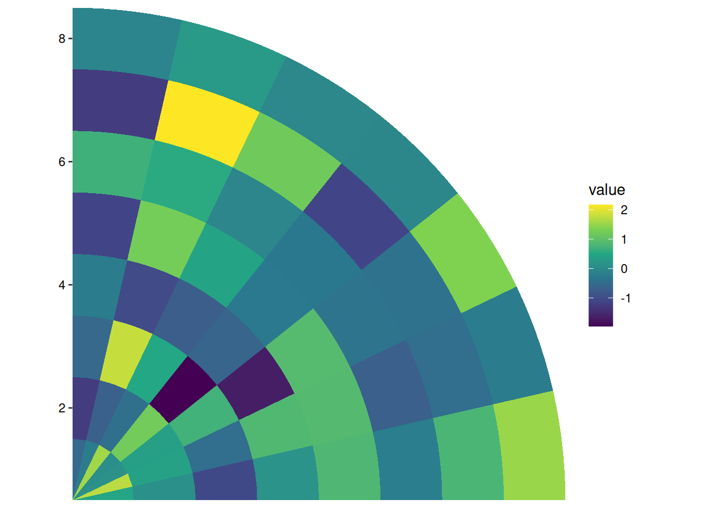
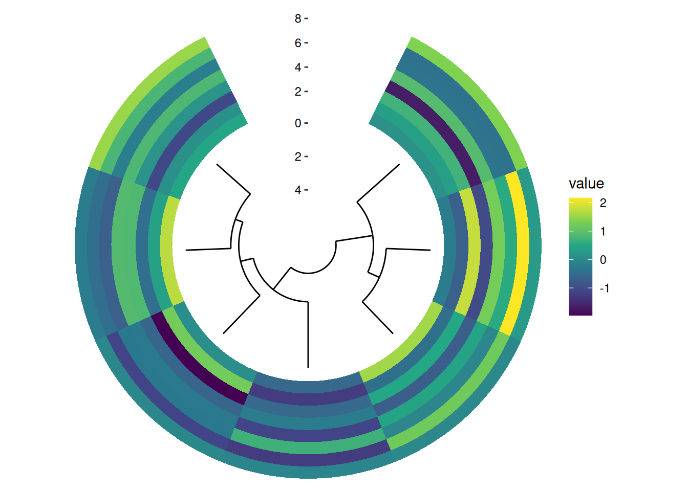
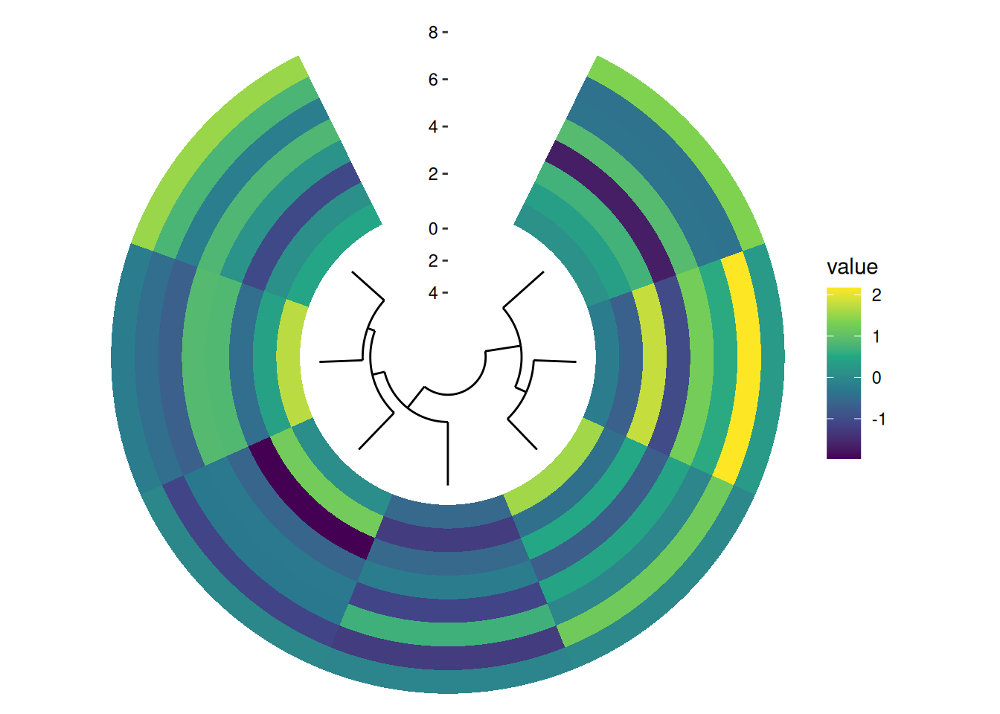
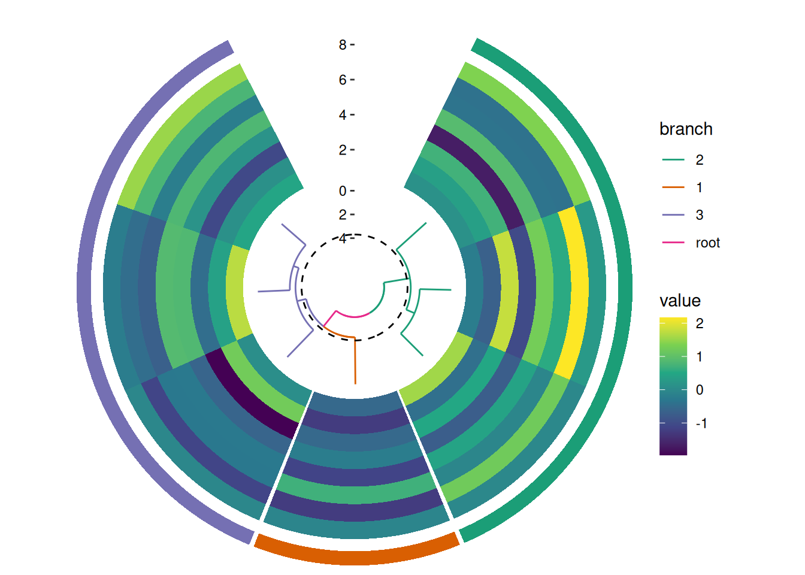
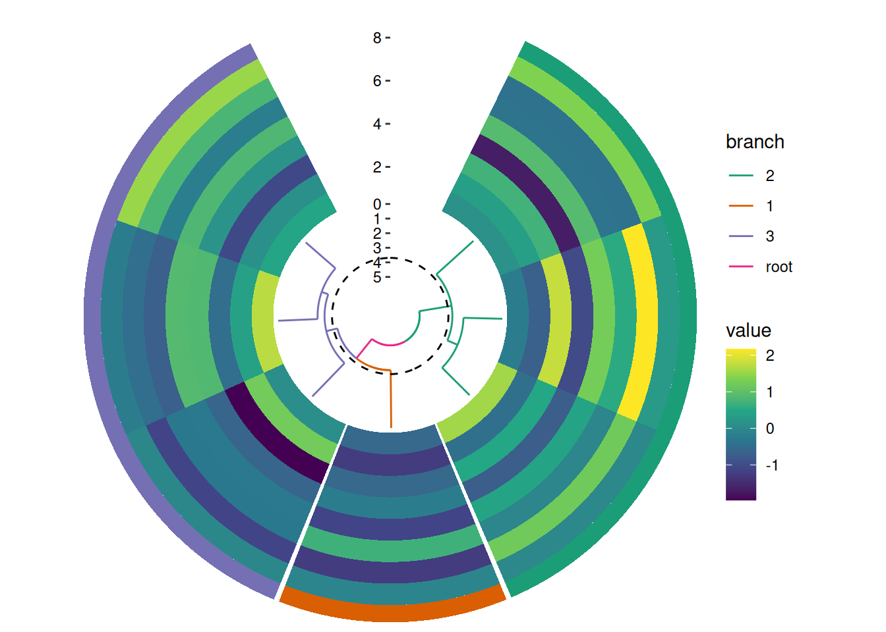

8 circle layout
circle_layout() arranges plots in a circular, each plot will occupy one circle track. Based on whether we want to align the discrete or continuous variables, there are two types of circle layouts:
circle_discrete(): Align discrete variable along the circle.circle_continuous(): Align continuous variable along the circle.
Code
library(ggalign)
set.seed(123)
small_mat <- matrix(rnorm(56), nrow = 7)
rownames(small_mat) <- paste0("row", seq_len(nrow(small_mat)))
colnames(small_mat) <- paste0("column", seq_len(ncol(small_mat)))8.1 radial
the core argument of circle_layout() is radial, which should be a coord_radial() object that defines the global parameters for coord_radial() across all plots in the layout. The parameters start, end, direction, and expand will be inherited and applied uniformly to all plots within the layout. The parameters theta and r.axis.inside will always be ignored and will be set to “x” and TRUE, respectively, for all plots.
circle_discrete(small_mat, radial = coord_radial(end = pi / 2, expand = FALSE)) +
ggalign() +
geom_tile(aes(y = .column_index, fill = value)) +
scale_fill_viridis_c()
In essence, you can think of circle_layout() as a radial version of stack_vertical(). When rendered, circle_layout() uses coord_radial() to arrange each plot along a circular track. The radial argument in circle_layout() controls the overall inner radius. Plots are added from the outermost to the innermost position.
circle_discrete(small_mat, radial = coord_radial(inner.radius = 0.1)) +
ggalign() +
geom_tile(aes(y = .column_index, fill = value)) +
scale_fill_viridis_c() +
align_dendro()
The size of each plot within the circle can be adjusted using the size argument (Section 2.4). However, it’s important to note that circle_layout() only supports relative size adjustments, meaning all size values are interpreted relative to one another, even for unit objects. By default, all plots have a relative size of 1.
circle_discrete(small_mat, radial = coord_radial(inner.radius = 0.1)) +
ggalign() +
geom_tile(aes(y = .column_index, fill = value)) +
scale_fill_viridis_c() +
align_dendro(size = 0.5)
Although circle_layout() does not currently support splitting observations into different facets, you can still indicate different groups visually. For instance, you can add a tile to represent each group. If you’re using a dendrogram, you can color the branches to indicate different groups.
circle_discrete(small_mat, radial = coord_radial(inner.radius = 0.1)) +
# add a single tile for each group
ggalign(NULL, size = 0.1) +
geom_tile(aes(y = 1L, fill = .panel)) +
theme_no_axes("y") +
scale_fill_brewer(palette = "Dark2", guide = "none") +
# add a heatmap
ggalign() +
geom_tile(aes(y = .column_index, fill = value)) +
scale_fill_viridis_c() +
# add a dendrogram
align_dendro(aes(color = branch), k = 3L, size = 0.5) +
scale_color_brewer(palette = "Dark2")
8.2 spacing
The spacing between plot tracks in circle_layout() is controlled by the scale expansion and the panel.spacing.r parameter. The panel.spacing.r parameter sets the spacing between the individual plot panels (tracks) within the circle layout. Increasing this value will add more space between the tracks. Specifically, the panel.spacing.r of the outer plot determines the spacing between it and the inner plot. By modifying this value, you can control the overall visual separation between tracks.
circle_discrete(small_mat, radial = coord_radial(inner.radius = 0.1)) +
# add a single tile for each group
ggalign(NULL, size = 0.1) +
geom_tile(aes(y = 1L, fill = .panel)) +
scale_fill_brewer(palette = "Dark2", guide = "none") +
no_expansion("y") +
theme(panel.spacing.r = unit(0, "mm")) +
# add a heatmap
ggalign() +
geom_tile(aes(y = .column_index, fill = value)) +
scale_fill_viridis_c() +
no_expansion("y") +
theme(panel.spacing.r = unit(0, "mm")) +
# add a dendrogram
align_dendro(aes(color = branch), k = 3L, size = 0.5) +
no_expansion("y") +
scale_color_brewer(palette = "Dark2")
The no_expansion() function is used to remove expansion around specific borders. It accepts a string with one or more of the following values: "t" (top), "l" (left), "b" (bottom), "r" (right), "x" (both left and right), and "y" (both bottom and top).
Now we have explored all the Layout defined in the package, next, we will build on these concepts and explore even more advanced strategies for integrating elements across multiple plots or annotations in a layout.